Who am I?
- Lead Developer at Raster Media
- Polyglot by curiosity PHP|Python|Javascript|Go
next
- scott@rastermedia.com
- @lvcodesmith
https://github.com/wscoble/docker-serf-prez
What are we covering in Part 1?
- Docker overview
- Serf overview
- Continuous Delivery solution
- Self-healing cluster solution
- Transparent scaling solution
What is Docker?
“Docker is an open platform for developers and sysadmins to build, ship, and run distributed
applications.”
Docker.io
What's included?
- Repository of images
- Solid documentation
- Flexible DSL for defining images
- Can link containers together
What's not included?
- Single command to start any container
- Self-healing of containers
- Distributed configuration
Serf
Serf will simplify the docker run command, allow for self-healing, and create a distributed
configuration with its gossip network.
What is Serf?
“Serf is a tool for cluster membership, failure detection, and orchestration that is decentralized,
fault-tolerant and highly available.”
Serfdom.io
Batteries almost included
- Eventually consistent
- Blazingly fast agents
- Uses MesssagePack (JSON, but faster)
- Well structured events system
- RPC protocol can be implemented anywhere with MessagePack
Continuous Delivery
How can Docker and Serf help me with Continuous Delivery?
Docker's Roles
- Create and version images for deployment
- Encapsulate a specific version of application code
- Tag by release candidacy
- Use private Docker repository to house release candidates
- Use privileged containers to configure a full stack of a release candidate
Serf's Roles
- Announce arrival of container
- Announce expected FQDN to DNS
- Handle events to automatically wire up resources
- Simplify Docker commands using a Serf ambassador
- Request deployment of release candidate to cluster
- Request destruction of release candidate from cluster
What does this look like?

Serf cliques - logical representation